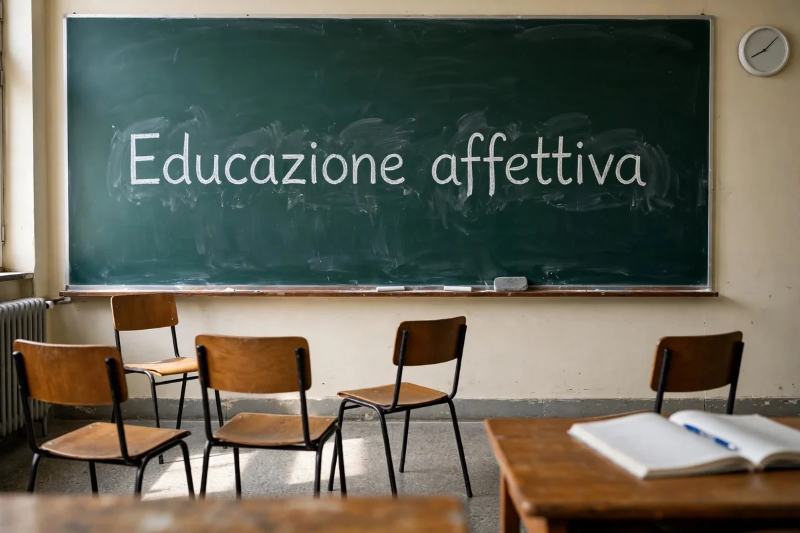

✍️ Firma sulla piattaforma del Ministero della Giustizia →
Che cos’è la legge che si vuole cancellare
Si chiama legge 9 giugno 2026, n. 104, «Disposizioni in materia di consenso informato in ambito scolastico». È stata pubblicata nella Gazzetta Ufficiale n. 142 del 22 giugno 2026 ed è in vigore dal 7 luglio 2026. Nel dibattito pubblico viene spesso chiamata «legge Valditara», dal nome del ministro dell’Istruzione e del merito.
Questo è ciò che prevede, punto per punto:
- Scuola dell’infanzia e scuola primaria: sono escluse in ogni caso le attività che trattano temi attinenti alla sessualità.
- Scuole secondarie: per le attività che toccano affettività e sessualità la scuola deve raccogliere il consenso scritto delle famiglie, o dello studente se maggiorenne.
- Preavviso di almeno 7 giorni, con l’indicazione di finalità, obiettivi, argomenti e modalità di svolgimento.
- I genitori possono visionare in anticipo i materiali didattici.
- Chi non aderisce ha diritto ad attività formative alternative.
- Gli esperti esterni entrano in classe solo con delibera del collegio dei docenti e approvazione del consiglio d’istituto.
Che cosa chiede il referendum
Il quesito chiede l’abrogazione totale della legge: non la modifica di un articolo, ma la cancellazione dell’intero testo. I promotori sostengono che il meccanismo del consenso preventivo, sommato al divieto assoluto nelle scuole per i più piccoli, renda di fatto impraticabile l’educazione affettiva, e chiedono che siano i singoli istituti a programmare queste attività.
Come si firma
La raccolta è soltanto online: non ci sono banchetti né moduli di carta. Si firma sulla piattaforma pubblica del Ministero della Giustizia, entrando con SPID, CIE (la carta d’identità elettronica) o CNS. Serve un’identità digitale funzionante e bastano pochi minuti; la firma vale solo per chi è iscritto nelle liste elettorali.
Un consiglio pratico: se apri il collegamento dentro Facebook, Instagram o WhatsApp l’accesso con SPID può non funzionare. Conviene aprire il link nel browser del telefono (Safari o Chrome), oppure da computer.
A che punto siamo: siamo oltre mezzo milione
525.730 firme
firme raccolte finora, secondo il contatore pubblicato dal comitato promotore. Ne servivano 500.000: la soglia è stata superata, e il numero continua a salire.
Allora perché firmare ancora? Per due motivi. Il primo: la raccolta resta aperta fino a fine settembre, e finché è aperta ogni firma conta. Il secondo: le firme vengono poi controllate una per una, e una parte viene sempre scartata — chi non risulta iscritto nelle liste elettorali, i dati che non combaciano, i doppioni. Più largo è il margine, più si va sicuri.
⚠️ Una precisazione onesta: il numero è quello dichiarato dal comitato, non un dato del Ministero. La piattaforma pubblica non espone un contatore leggibile dall’esterno: l’unico riscontro ufficiale arriverà con il deposito delle firme.
Per noi il senso di questo mezzo milione è un altro, e lo diciamo come opinione nostra e non come fatto: dimostra che i cittadini su questo tema ci sono, e che sono molti di più di quelli che hanno firmato — perché firmare richiede SPID, qualche minuto e la voglia di cercare la pagina, e chi la pensa allo stesso modo senza fare quei passaggi non compare in nessun contatore. Le firme non chiudono la partita: la aprono.
⚠️ Una precisazione onesta: il numero è quello dichiarato dal comitato, non un dato del Ministero. La piattaforma pubblica non espone un contatore leggibile dall’esterno: l’unico riscontro ufficiale arriverà con il deposito delle firme.
✍️ Vai alla pagina ufficiale per firmare →
L'immagine in apertura è generata con intelligenza artificiale: raffigura un'aula ricostruita, non una scuola reale.
Fonti: Gazzetta Ufficiale n. 142 del 22 giugno 2026 (testo della legge) e n. 174 del 29 luglio 2026 (annuncio dell’iniziativa referendaria); piattaforma firmereferendum.giustizia.it del Ministero della Giustizia; sito del Comitato promotore «Sì Educazione Affettiva nelle scuole».